← 返回阅读库 · 原论文目录
论文讲解阅读文档 · 表征学习 · v203
SS Video Representation Learning by Context&Motion Decoupling[2104.00862]
视频时长 00:08:27；讲解文字 3,794 字符；提取讲解画面 19 张。按视频原顺序阅读，每段文字保留时间戳。
文字来自整段视频的自动语音转写，按自然停顿分段，并与 PPT / 论文页面 / 演示画面对齐。未将讲解压缩为摘要；术语、数字和口述公式请结合画面及原论文核对。 阅读稿已校正规范部分明确术语误识别；原始逐字稿和每处修改记录另行保留。
讲解画面为源视频截图（640×360），不是可编辑 PPT 文件。全片按每秒 2 帧扫描内容变化，逐步展开页保留；连续动画保留代表画面。清晰度受源视频限制。
下载完整资料包 · 含离线 HTML、PDF、Word、全部 PPT 画面和字幕。
原论文与材料
Self-supervised Video Representation Learning by Context and Motion Decoupling · 下载完整 PDF（10 页）
按时间阅读
00:00:00–00:00:17 · 画面 001
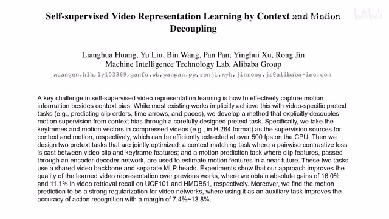
00:00:00–00:00:17 · 画面 001大家好,今天我们来迅速说一篇论文 Self-Supervised Video Representation Learning by Context and Motion Decoupling 这篇论文的标题基本上把整个论文的故事就已经讲全了我们来具体看它的实现吧首先我们做 video 相关的东西一直在做梦的一个好事就是 context 和 motion 能够相互分开就像拿锅炒豆,红豆一把,绿豆一把
00:00:17–00:01:25 · 画面 002
00:00:17–00:01:25 · 画面 002烧到锅里炒来炒去,炒完之后倒到盘里,红豆绿豆自然分开。这有这么好的事吗?当然还是有的。在过去呢,这个 SlowFast 的这个模型里面呢,之前我们也介绍了,它呢是通过两个不同的这个 Stream 或者叫 Branch,就是两个不同的这个信息的流,让一个呢去理解这个高频的这个运动信息,另一个呢就是静态的这个语义的信息。但是呢，他训练的时候呢，还是把两只最后合到了一起一起训练，也没有说确实有一个保证能真的让两个这个信息的这个理由呢学到对应的相互的知识。那么在本文中呢，作者就说别整这花里胡哨了，我前面有一个 encoder，然后呢，他现在有两个 heads。那么他们一个呢，用来做这个 context，就是语义上这个信息，那么另一个呢，用来做这个 motion，就是运动上的信息。
那这样子呢，通过两个不同的任务呢，把我们有用的信息呢都传递到这个 encoder 里面，这样子学到一个好的 encoder，帮我们提一个好的 representation。那么当然这个想法是非常好的，按照作者的设计，我们只要能够达到这个图像中语义的信息还有这个视频的运动信息，那就可以做这种学习了。那么对于语义的信息好说吗，一张图像进来，那就自己带有语义信息了。那么对于运动信息呢，我们当然也有方法，比如说弄个光流。
00:01:25–00:01:26 · 画面 003
00:01:25–00:01:26 · 画面 00300:01:26–00:02:05 · 画面 004
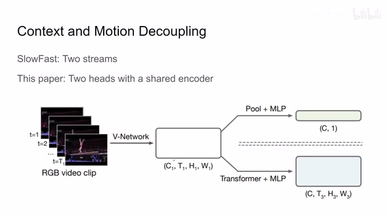
00:01:26–00:02:05 · 画面 004对吧做个帧差都可以但是你说真的我要我们去手动的去做这些样本吗那这里呢作者说有一个取巧的方法哎我们其实在存储这个视频的过程中呢就已经有了一个现成的工具它呀就是我们的这个 H264 视频编码那么简单介绍一下在这个 H264 当中呢我们主要存在有三种这个视频帧那第一种呢叫 iFrame 它呢是存储了整个这一帧当前的这个图像那另一种呢是这个 pFrame
00:02:05–00:04:01 · 画面 005
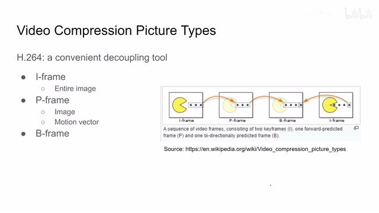
00:02:05–00:04:01 · 画面 005它呢有的时候呢并不能存全这个视频的图像而更多呢是依赖这个自己存的这个 motion vector 然后呢包括前面的这个 iframe 通过 iframe 加上这个 motion vector 这样一个 semantic 加 motion 的这样一个形式来给它重建出这个 pframe 啊那么前面的这个基础呢在这个 iframe 里面而这个差分的这个量呢在我们这个 motion vector 里面那么最后一种还有是 bframe 啊那相对于这个 pframe 呢它是只用于在这个当前这一帧时刻之前的这些帧而这个 b frame 呢它是用到了这个之前的帧还有未来的帧共同作为一个参考来对这个当前这一帧重建那么对于这一块呢感兴趣的朋友呢你可以查看这个 wiki 有非常详细的介绍那在我们这个任务当中呢那么在我们这个使用场景当中呢 i frame 就是一个天生的良好的这个 semantics 啊或者叫 context
它存储了整个的图像的信息而且一般我们需要 iframe 的时候都是 video clip 变化比较大的时候这也意味着语义信息的改变所以它是非常好的而 pframe 就帮我们存储了各种的 motion vector 所以我们关于运动的这些信息都存在这里面因此呢，我们只需要把我们这个 H.264 编码的这个视频呢，把里面的 iframe 和 pframe 里面的 motion vector 给它提出来，那么它呢自然就为我们提供了一种相对粗糙但是依然管用的这个对于这个 semantic 对于 context 的标记，还有对于我们 motion 的这样一个标记。那么有了这种粗略的标记呢，我们就可以再往下做我们自己想做的事情。这里呢，你可以看到作者设计的这个结构。
00:04:01–00:04:22 · 画面 006
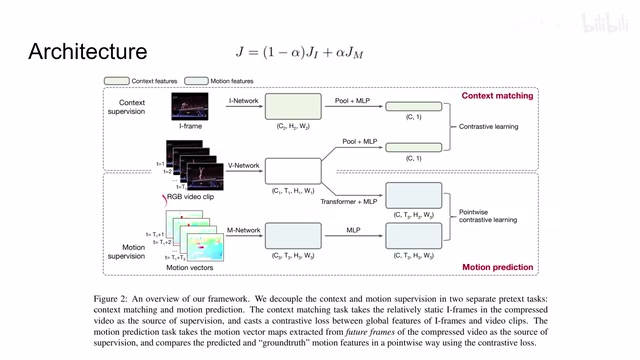
00:04:01–00:04:22 · 画面 006我们的这个网络呢，他提出来呢，一方面要跟这个 context 做 matching，另一方面呢要做这个 motion prediction。那么最后整个训练的 loss 呢，是这个 loss 还有这个 loss 他们的这个线性和。那么当然他们选的 alpha 是 0.5 啊，就是一半一半。那么下面呢，我们就继续来看啊，这边这个 context matching 还有这个 motion prediction 到底是怎么回事。
00:04:22–00:04:24 · 画面 007
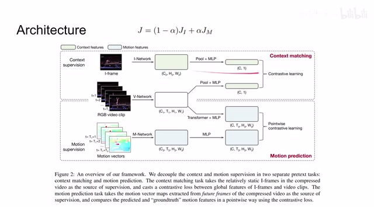
00:04:22–00:04:24 · 画面 00700:04:24–00:04:27 · 画面 008
00:04:24–00:04:27 · 画面 008那么对于 context matching 来说呢，作者呢用的是非常著名的这个 MoCo v2 contrastive learning 啊，这个我们也介绍过了，这个链接呢我们放在视频简介里面。那么他的思想很自然的就是，我是同属于一个视频的这个 iframe 呢，我们的 representation 呢要靠近，那么不同视频的 iframe 呢，我们要与它相互远离。
00:04:27–00:04:49 · 画面 009
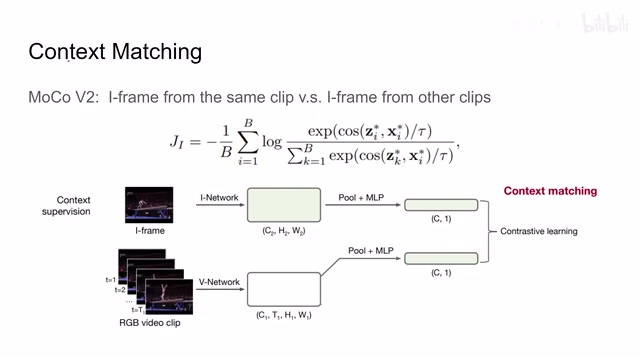
00:04:27–00:04:49 · 画面 009所以你看到了在我们这个视频提出 video representation 之后呢这里过了这个 pooling 加 MLP 呢我们有一个关于 semantic 关于 context 这样一个 feature 那么它的尺寸呢是 c 乘 1 这样一个尺寸然后呢在另一边呢我们取不同视频中的 iframe 当然呢也包括我们这个视频的 iframe 把这些 iframe 取进来之后呢扔到我们这个 iNetwork 里面然后呢也是过这个 pooling MLP 然后得到这个 c1 然后这两个 vector 呢就可以做 contrastive learning
00:04:49–00:04:50 · 画面 010
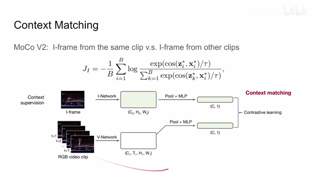
00:04:49–00:04:50 · 画面 01000:04:50–00:05:36 · 画面 011
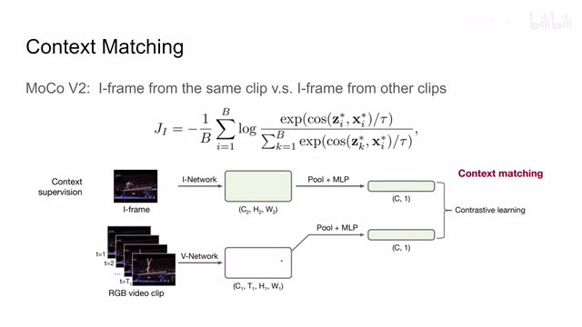
00:04:50–00:05:36 · 画面 011那么正样本的显示，如果说这个 iframe 是从这个视频中来的，那么我就是设置为正样本，那么反之如果这个 iframe 不是从这个视频里面来的，那它就是负样本，是一个典型的 contrastive learning 的方法，而这个 MLP 呢是两层的 linear layer，就是我们 Moco 里面 predictor 的作用，那么这个呢是 context matching
00:05:36–00:07:36 · 画面 012
00:05:36–00:07:36 · 画面 012那么在另一部分，我们来到 motion prediction，我们这一部分你看标题就可以看出来，它是通过对未来的几帧的动作的预测来实现，达到一个好的 representation 的目的，而这个过程它又不仅仅是预测，比如说你传统的预测你是预测好的结果直接做一个 L2 distance 那就可以了，做个 MSE 对不对，但是在这里作者使用的是 pointwise 的 Moco，也就是说虽然也是我做出来预测的结果跟我的 ground truth 做对比但是它的对比的 loss 是用的是这种 Moco InfoNCE loss 的形式，而且它的正样本只局限于一个像素，也就是说正好对应的那一个像素是我们的正样本，其他的都是负样本，那么下面我们继续来看作者的实现，这里我们的 feature 直接提出来过 Transformer，然后它就会得到一个形如 C3 T3 H3 和 W3 这样一个对未来的 motion 的预测
那我们把这个 tensor 送到 MLP 里面，C 呢就是我们 channel 的数量，这个 T3 H3 和 W3 他们乘起来呢是作为我们像素的数量，然后呢得到一个结果，那另一方面呢，我们把我们提出来这个 motion vectors 送到这个 Mnetworks 里面，它呢就直接提出来这个 C3 T3 H3 和 W3 这样一个形状的一个 tensor，然后呢把它送到 MLP 里面得到一个形如这样的一个 tensor那么这两个东西呢就可以做这个 pointwise contrastive learning，这是我们之前所说的，只有在相同时刻相同位置上的像素我们视为正样本，那其他的呢都作为负样本，那么这个呢包括这个 motion prediction 还有这个 transformer 使用呢，也是作者经过很多的实验最终确定下来的，而且他用 contrastive learning 来替代传统的这个 L2 distance 也是很有意思的一个操作
那么总的来说呢，以上就是本文的主要的技术贡献了，那这里呢其实有一个很有意思的事情呢，作者没有讨论就是我们原来在训练 Moco 的时候呢，它呢都是需要有一个 branch 需要 stop gradient 也就是停止那一只的这个梯度传递，我们不使用梯度去更新它，而是使用 momentum 的一个形式去更新它，这样子的好处呢就是可以避免这个 model collapse 就是模型的坍塌，但是这里呢照作者的描述呢，因为他要训练所有的这些网络
00:07:36–00:07:50 · 画面 013
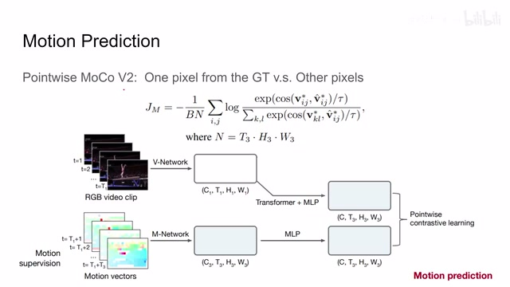
00:07:36–00:07:50 · 画面 01300:07:50–00:07:52 · 画面 014
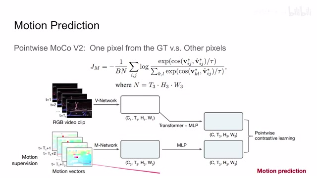
00:07:50–00:07:52 · 画面 01400:07:52–00:07:56 · 画面 015
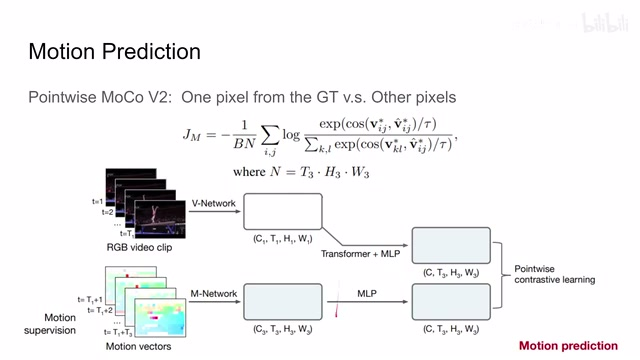
00:07:52–00:07:56 · 画面 015所以它这里必须有一个梯度的传递，那么这个配置是最显著于区别于 Moco 的地方，那么其他的至于样本的组织，它输入两个 branch 的样本都不一样，这种明显的区别我们就不详细的讨论了
00:07:56–00:07:57 · 画面 016
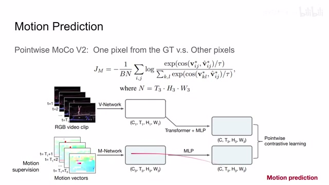
00:07:56–00:07:57 · 画面 01600:07:57–00:08:01 · 画面 017
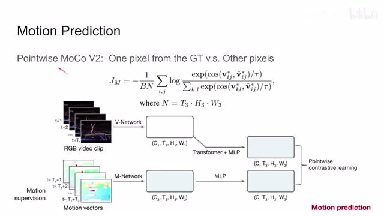
00:07:57–00:08:01 · 画面 01700:08:01–00:08:26 · 画面 018
00:08:01–00:08:26 · 画面 018那么在此之后呢，作者汇报了相当充分的实验结果，包括我们的这个模型的设计的选择，然后使用不同的 backbone 用下游的任务呢去评估这个 learning framework 它的有效性，对比了其他一些方法，那么非常推荐你去查看原文，好的，感谢您的收看，再见
00:08:26–00:08:27 · 画面 019
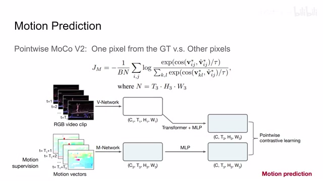
00:08:26–00:08:27 · 画面 019转写与来源说明 · 0 个自动复核提示
保留 20 个原始语音片段，0 个片段触发自动复核提示。提示仅用于定位可能的术语、重复或识别问题，不等于已确认错误。
讲解画面为源视频截图（640×360），不是可编辑 PPT 文件。全片按每秒 2 帧扫描内容变化，逐步展开页保留；连续动画保留代表画面。清晰度受源视频限制。
原视频：paper/合集_2026-10-16_表征学习/[论文速览]SS Video Representation Learning by Context&Motion Decoupling[2104.00862].mp4
SHA-256：1293361bf9ff36a348c761d3861623a346e6e7c750f6572a1dc06dd1b7fb78b0
全文按视频语音与画面制作。原论文可从上方链接下载；完整资料包保留全文、原始逐字稿、字幕和校对记录。